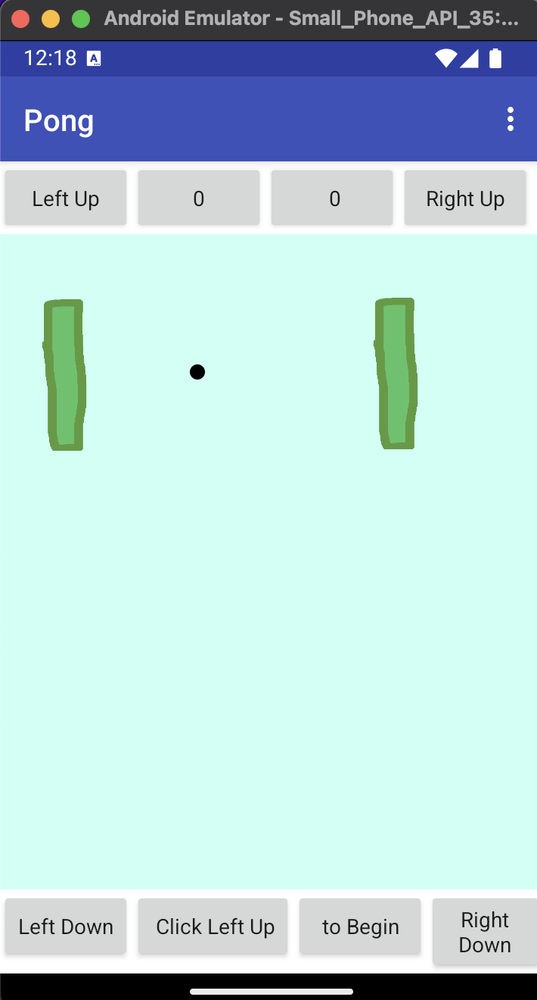
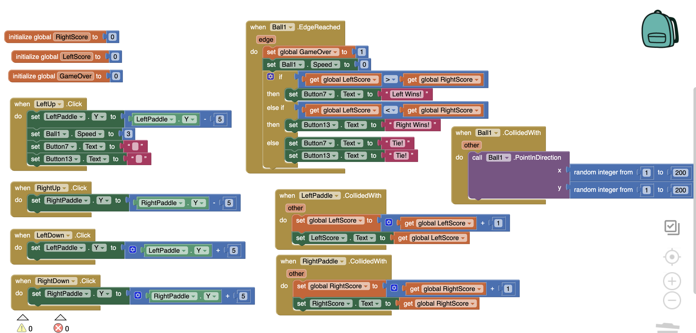
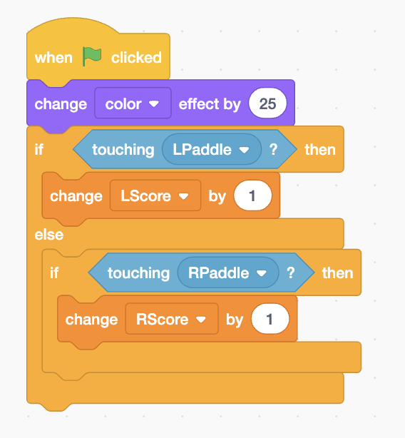
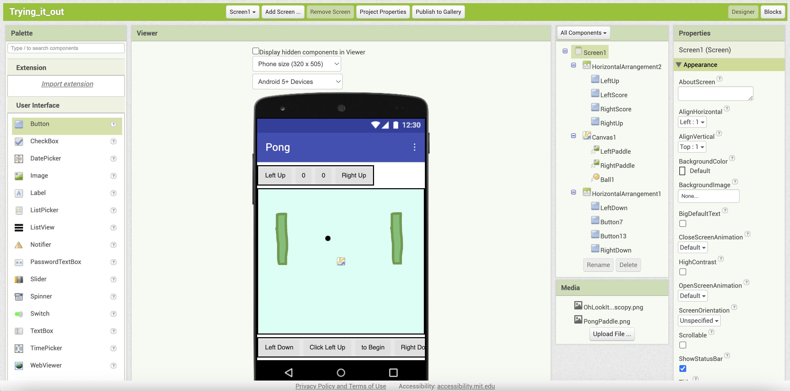
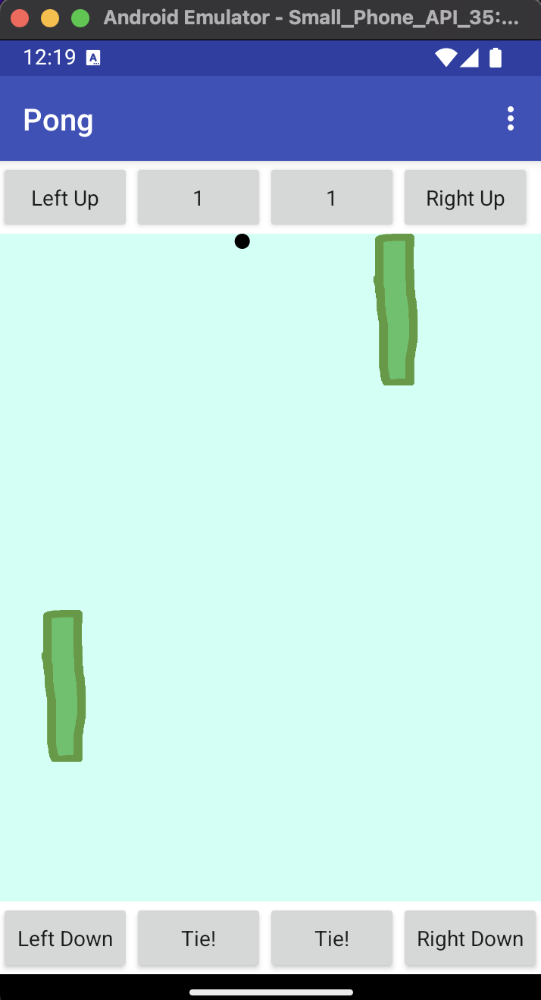

Paddles can be moved up and down with corresponding buttons
Score increases each time you defend your side
A really, really slow ball that (usually) reflects off the paddle when hit
A message on how to start the game that disappears when the game is started
A message that displays the winner when the game's over, or if the game tied
Sometimes, the ball doesn't reflect, and it just ends up going through the paddle
If the ball gets hit at such a sharp angle that it hits the bottom of the screen before it hits the other paddle, the game ends
You have to reinstall the game to reset it
When app opened, begin this line of code
The change item color feature
The ability to put items anywhere, not just in a canvas box
A way for the ball to detect which paddle it hit, not just that the ball hit a paddle. Instead, I had to detect if each paddle collided with something to keep score
You dont right click on the items in the layers to rename them, you use the rename button
Positive Y is down the screen. In Scratch, it was opposite. In the terminal working with a 2D array, it’s typically down too, but it still feels strange
I couldn't just put the buttons at the left and right of the screen, I had to make a Horizontal Arrangement and put empty buttons in it for spacing. Additionally, the line up on the App Inventor didn’t match the lineup I had on the phone
You can't click and hold the buttons to keep moving the paddles, you have to click them repeatedly.
The blocks are set up in Object notation, with objectName.function, which I think is good for getting people used to coding syntax
My computer was unable to run the emulator from App Inventor, I tried running every package they provided, and each turned up fascinating errors such as (no such file, not in dyld cache). This led me down the rabbit hole of trying to update Dylib on my computer. Unfortunately, I was unable to do so, receiving a “ln: /usr/lib/libmysqlclient.18.dylib: Operation not permitted” message. I might have been able to solve it (not completely sure, I only know basic Unix) but I decided to try downloading another emulator instead to save time. I decided on Android Studio’s Android Emulator, since I figured the software by the company itself would probably be the best to use. It looked confusing to set up, but it was actually really easy. The instructions were listed twice on the website for some reason, making it look more complicated than it actually was.
